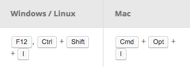
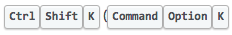

Веб-приложения
Мобильные приложения
Серверные приложения
Робототехника
1995 Появление LiveScript в браузере Netscape, который был переименован в JavaScript
1996 Microsoft выпустила релиз JScript для IE3
1997 JavaScript был стандартизован в "ECMAScript"
2005 Был придуман AJAX. Начало web 2.0
2006 Релиз jQuery 1.0
2010 Релиз Node.JS
2015 Спецификаци ECMAScript 2015 (ES6, Harmony)
Перемещение элементов html
Обработка событий
AJAX запросы
Cookie, localstorage
Слайдеры, табы, всплывающие сообщение
console.log( 'Hello World!' );
alert( 'Hello World!' );
Попробуйте сами в консоли вашего браузера
Вызов консоли в Chrome
Вызов консоли в Firefox
Механизма автодополнения
console.log( 'Hello' )
console.log( 'World!' )
Незавершенные выражения
console.log(1 +
1
+ 2);
Несрабатывание механизма автодополнения
func()
['h1', 'h2'].foreach(function(t) {
handleTag(t)
})
func()['h1', 'h2'].foreach(function(t) {
handleTag(t)
})
Проверьте этот код
alert();
['Hello', 'World'].foreach(alert);
var x;
x = 5;
var x = 5;
var x = 5;
x = 20;
var x = 5,
y = 21,
z;
var x = 5,
y = 21,
z;
var z;
console.log( z );
ES6 дополнения к var
var z = 10;
let ten = 10;
const nu = 3.14;
var foo = 1,
bar = foo;
bar = 9;
console.log(foo, bar); // => 1, 9. foo не изменился
var foo = [1, 2],
bar = foo;
bar[0] = 9; // bar теперь ссылается на foo
console.log(foo[0], bar[0]); // => 9, 9.
var greeting = 'Привет всем!'; // через литерал
console.log( typeof greeting ); // => string
var coworkingPlace = new String('Спалах'); // через конструктор String
console.log( typeof coworkingPlace ); // => object
var two = 2; // через литерал
console.log( typeof (typeof two) ); // => string
var five = 5; // через литерал
console.log( typeof five ); // => number
var one = new Number(1); // через конструктор String
console.log( typeof one ); // => object
var five = '5'; // через литерал
console.log( typeof five ); // => ?
string
var itIsNotTrue = false; // через литерал
console.log( typeof itIsNotTrue ); // => boolean
var itIsTrue = new Boolean(true); // через конструктор String
console.log( typeof itIsTrue ); // => object
var doNotKnow;
console.log( typeof doNotKnow ); // => undefined
var nothingHere = null;
console.log( typeof nothingHere ); // => object
что? object?
так получилось
по ходу развития JS
<script>
alert( 'Hello World!' );
</script>
<script src="//cdn.example.com/jquery.js" >
</script>
<script src="/js/app.js" >
</script>
<script src="//cdn.example.com/jquery.js" >
</script>
<script src="/js/app.js" >
</script>
<script src="/js/app.js" async >
</script>
<script src="/js/app.js" defer >
</script>
var script = document.createElement('script');
script.src = src;
document.head.appendChild(script);
(function(i,s,o,g,r,a,m){i['GoogleAnalyticsObject']=r;i[r]=i[r]||function(){
(i[r].q=i[r].q||[]).push(arguments)},i[r].l=1*new Date();a=s.createElement(o),
m=s.getElementsByTagName(o)[0];a.async=1;a.src=g;m.parentNode.insertBefore(a,m)
})(window,document,'script','//www.google-analytics.com/analytics.js','ga');